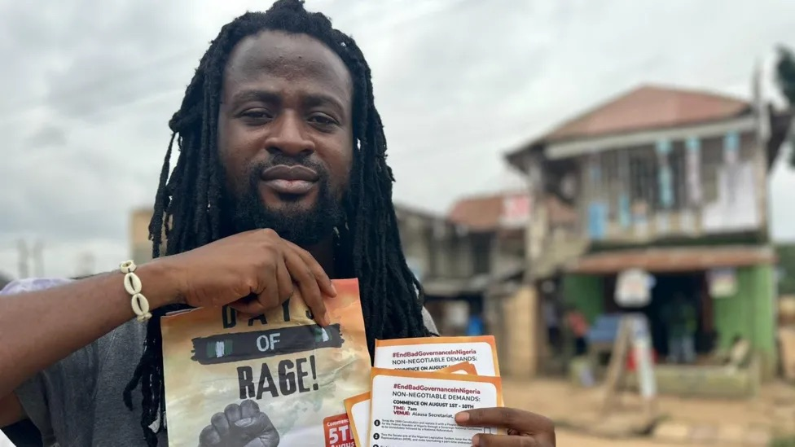

Days After Rage in Nigeria
Read time: 3 minutes
The Protests Begin!
On August 1st, 2024, Nigerians took to the streets in a wave of protests that spanned ten days, driven by escalating hardship and frustration. These protests were largely peaceful at first, with thousands of citizens expressing discontent over economic struggles, including inflation, unemployment, and the removal of critical fuel subsidies. The removal of subsidies had led to skyrocketing costs of living, pushing the nation’s poorest into deeper poverty. Protesters called for the reinstatement of these subsidies, fiscal reforms, and a reduction in government spending, which many felt was extravagant given the dire state of the economy.
Escalation and Clashes
As the protests continued, tensions between demonstrators and security forces mounted. In Lagos and Abuja, police fired tear gas in an attempt to disperse crowds, leading to several violent clashes. While most protesters demanded change peacefully, some demonstrations took a more aggressive turn, with incidents of vandalism reported in states like Kano and Niger. Tragically, several lives were lost, including six protesters in Niger state and one in Kaduna. Despite the violence, the spirit of the protests remained rooted in the desire for a better Nigeria, with many rallying around the slogan “End Bad Governance.”
Looking Forward
Days after the protests ended, Nigeria is still grappling with the fallout. While President Bola Tinubu’s administration has vowed to address the concerns raised, including economic reforms, many Nigerians remain sceptical. The underlying grievances of economic disparity, government corruption, and insecurity persist, making the protests a potential catalyst for more profound changes. Moving forward, the hope is that the voices raised during those ten days of unrest will inspire long-overdue reforms, especially for a population that feels increasingly alienated from its leaders.